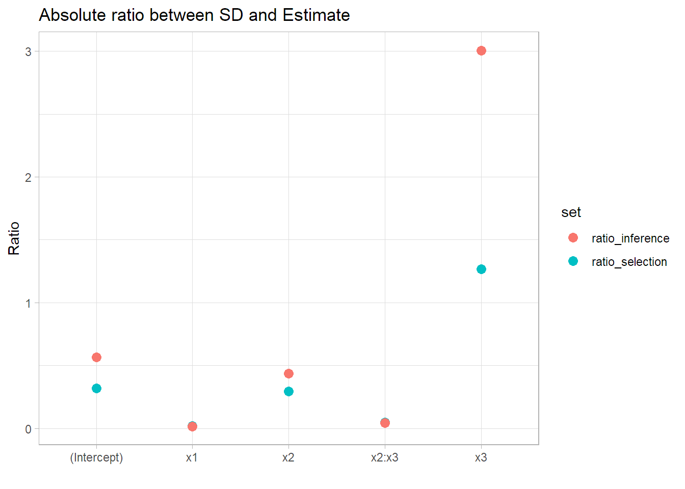

Inference is not valid in the dataset used for model selection.
Let's say we have a dataset and we want to fit a model to it and do some inference such as obtaining the coefficients and look for their confidence intervals.
For such a task we would first need to find a model that we think approximates to the real data generating process behind the phenomenon.
This will be the model selection step.
Then we would look at the output of our model and get the standard error of the coefficients or calculate the confidence interval or any other similar task. This will be the inference step.
The issue here is that, if we don't know the true model and we do model selection, our own model will be a random object. Why? Because the particular dataset we are using is also a set of random variables. Other datasets might return another model formula as the best between our options since that particular dataset would have other observations and particularities.
Main problem:
since we are selecting a model based on a particular dataset, the standard errors and p-values will be smaller than then actual ones.
"That means there is some extra randomness in your estimated parameters (and everything else), which isn't accounted for by formulas which assume a fixed model.
This is not just a problem with formal model-selection devices like cross-validation. If you do an initial, exploratory data analysis before deciding which model to use - and that's generally a good idea - you are, yourself, acting as a noisy, complicated model-selection device" (Sharizi 2017)
The most straightforward way to deal with this (if you are using independent observations) is to split the data, do model selection in one part and then fit the best model in the other part. Your second fit will be the one useful for inference.
You could fit the model to the full data but that would include the part used for model selection and you would still get false, overconfident standard errors.
Let's see an example.
We will generate data following a somewhat "complicated" model with interactions.
We will split the data in two equal size parts. One for model selection and one for inference.
We will then fit a couple formulas to model selection part and pick the one with the minimum RMSE. We will compare the standard errors obtained in the model selection part and the ones obtained fitting that model to the inference part.
Thanks to BrunoRodrigues for this post that I used as guideline to fit models with Cross Validation in R.
We start by generating the data, including interactions.
set.seed(1)
N = 5000
b0 = 4
b1 = 1
b2 = 2
b3 = 3
b4 = 4
b5 = 5
x1 = runif(N, 0, 10)
x2 = rnorm(N, 20, 3)
x3 = runif(N, 20, 40)
error = rnorm(N, 0, 200)
y = b0 + b1*x1 + b2*x2 + b3*x3 + b4*x1*x2 + b5*x2*x3 + error
df = tibble(y, x1, x2, x3)
We do the first split, df_selection will be the one used to try different models and pick one.
df_inference will be used to do the actual inference given the model selected.
prop = 0.5
selection_inference_split = initial_split(df, prop=prop)
df_selection = training(selection_inference_split)
df_inference = testing(selection_inference_split)
To select a model using df_selection we will use Cross validation to try to get the model that best generalizes.
We will generate 30 split of 70% of the data and use the other 30% to calculate RMSE metric.
validation_data <- mc_cv(df_selection, prop = 0.7, times = 30)
We create two functions, my_lm() will run a linear regression for the training part of each split of CV and get the prediction for the testing part of each split. We will run this for a couple of formulas.
return_model will fit the model to the whole training data to extract the parameters and standard errors we get if we use the same dataset that was used to do model selection.
my_lm <- function(formula, split, id){
analysis_set = analysis(split)
model <- lm(formula = formula, data=analysis_set)
assessment_set <- assessment(split)
pred = tibble::tibble("id" = id,
"formula" = formula,
"truth" = assessment_set$y,
"prediction" = unlist(predict(model, newdata = assessment_set)))
}
return_model = function(formula){
model <- lm(formula = formula, data=df_selection)
output = list(model$coefficients, summary(model))
}
We will try 5 formulas. The first one is the actual data generating process and should the best in terms of RMSE. We will exclude that one for model selection since the aim of this is to simulate a scenario where we don't know the actual formula behind the data. We calculate it just for reference but we will pick one of the other 4 models for inference.
formulas = list("y ~ x1 + x2 +x3 + x1*x2 + x2*x3",
"y ~ .",
"y ~ x1 + x2",
"y ~ x1 + x2 + x3 + x1*x2",
"y ~ x1 + x2 + x3 + x2*x3")
results = data.frame()
models = list()
for (formula in formulas){
results_selection <- map2_df(.x = validation_data$splits,
.y = validation_data$id,
~my_lm(formula = formula, split = .x, id = .y))
model = return_model(formula)
results = rbind.data.frame(results, results_selection)
models = c(models, model )
}
We retrieve the mean RMSE across the splits, calculated in the test part of each split.
We can see that the real model is the best in terms of RMSE. Between the others, we can see that the one including the x2:x3 interaction is the best.
So, we will keep that one as our "model selected"
results %>%
group_by(id, formula) %>%
rmse(truth, prediction) %>%
group_by(formula) %>%
summarise(mean_rmse = mean(.estimate)) %>%
as.data.frame()
## formula mean_rmse
## 1 y ~ . 219.4756
## 2 y ~ x1 + x2 625.0173
## 3 y ~ x1 + x2 + x3 + x1*x2 217.3185
## 4 y ~ x1 + x2 + x3 + x2*x3 198.9802
## 5 y ~ x1 + x2 +x3 + x1*x2 + x2*x3 196.4747
We can check the parameters and the standard errors when fitted to the whole selection dataset.
##
## Call:
## lm(formula = formula, data = df_selection)
##
## Residuals:
## Min 1Q Median 3Q Max
## -854.07 -132.91 -0.97 137.65 714.53
##
## Coefficients:
## Estimate Std. Error t value Pr(>|t|)
## (Intercept) -245.1084 138.9684 -1.764 0.0779 .
## x1 82.7919 1.3540 61.148 <2e-16 ***
## x2 15.7118 6.8628 2.289 0.0221 *
## x3 -1.5177 4.5626 -0.333 0.7394
## x2:x3 5.1676 0.2256 22.906 <2e-16 ***
## ---
## Signif. codes: 0 '***' 0.001 '**' 0.01 '*' 0.05 '.' 0.1 ' ' 1
##
## Residual standard error: 199.1 on 2495 degrees of freedom
## Multiple R-squared: 0.947, Adjusted R-squared: 0.9469
## F-statistic: 1.115e+04 on 4 and 2495 DF, p-value: < 2.2e-16
And let's see what happens if we fit the same model to the inference set.
model_test = lm(formula=formulas[[5]], data=df_inference)
summary(model_test)
##
## Call:
## lm(formula = formulas[[5]], data = df_inference)
##
## Residuals:
## Min 1Q Median 3Q Max
## -656.47 -138.67 -5.64 130.21 773.99
##
## Coefficients:
## Estimate Std. Error t value Pr(>|t|)
## (Intercept) -438.7059 140.2618 -3.128 0.001782 **
## x1 81.4724 1.3622 59.812 < 2e-16 ***
## x2 23.4856 6.9475 3.380 0.000735 ***
## x3 3.6309 4.5942 0.790 0.429417
## x2:x3 4.9750 0.2275 21.869 < 2e-16 ***
## ---
## Signif. codes: 0 '***' 0.001 '**' 0.01 '*' 0.05 '.' 0.1 ' ' 1
##
## Residual standard error: 199.4 on 2495 degrees of freedom
## Multiple R-squared: 0.9473, Adjusted R-squared: 0.9472
## F-statistic: 1.121e+04 on 4 and 2495 DF, p-value: < 2.2e-16
First we can see that the parameters have changed a bit.
In second place we can see that the standard errors are generally bigger in comparison to the parameter for the inference set and will generate a wider confidence interval.
ggplot(data = ratio_df) +
geom_point(aes(x=parameter, y=ratio, col=set), size=3) +
theme(legend.title = element_blank()) +
theme_light() +
xlab("") +
ylab("Ratio") +
ggtitle("Absolute ratio between SD and Estimate")

My idea is to add a plot with the confidence intervals so the effect can be seen directly but I don't have the time today. Anyways, it is clear that the standad error to parameter ratio is bigger in the inference set, showing that the inference in the same dataset as model selection is invalid as it is overconfident in the results.